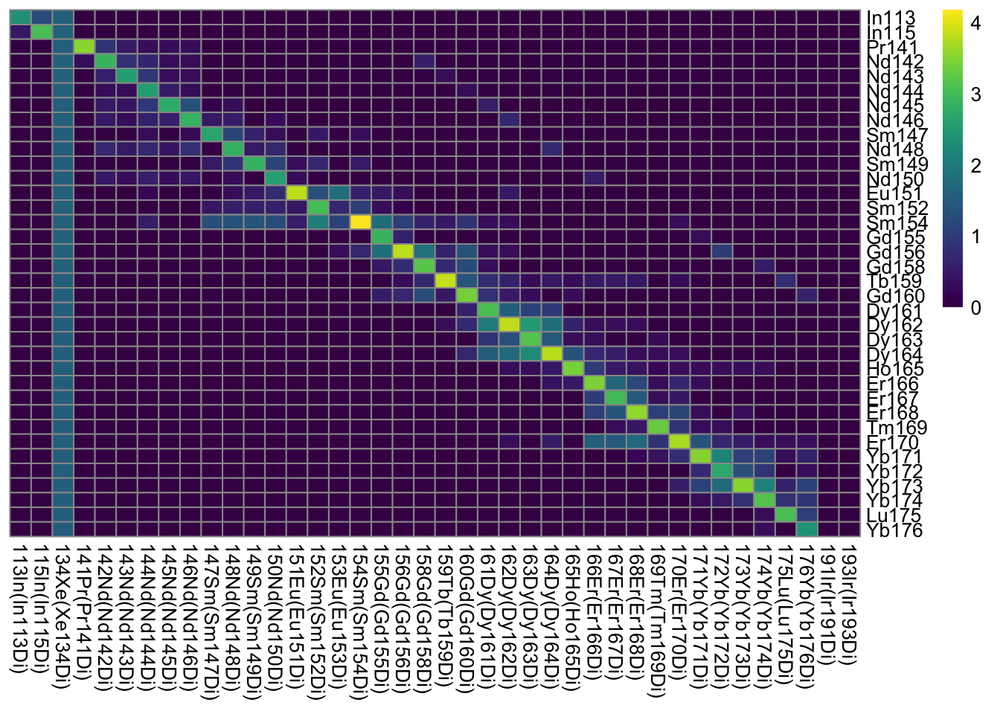
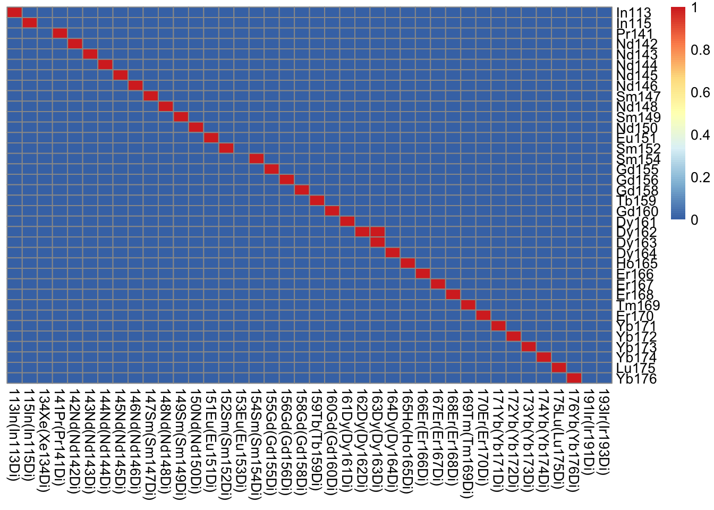
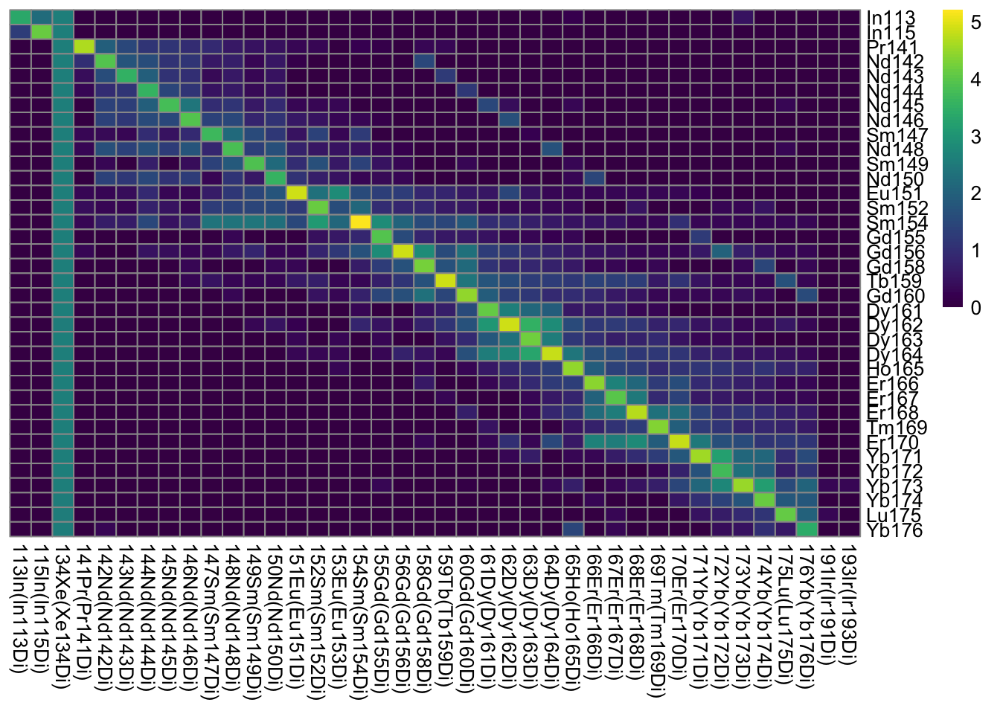
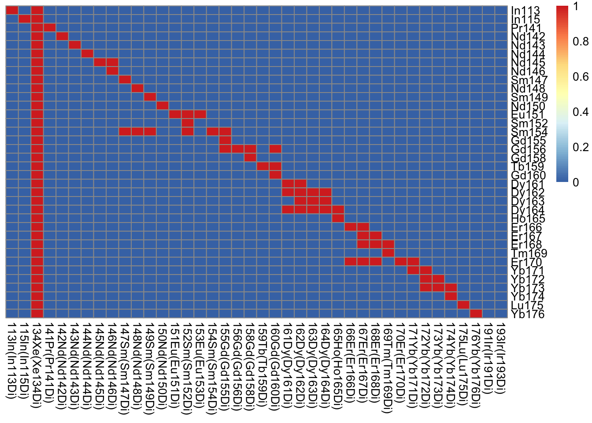

Chapter 3 Preprocessing IMC data
To test the scripts, please access the raw data via:
sm_url <- "https://data.mendeley.com/public-files/datasets/v58yj49pfr/files/b39223d2-2825-4e79-9875-86fa0e1c55d2/file_downloaded?dl=1"
download.file(sm_url, "data/Figure_S5.zip")
unzip("data/Figure_S5.zip", exdir="data", overwrite=TRUE)
unlink("data/Figure_S5.zip")3.1 Read in the data
Overview on how to read in pre-processed data.
3.2 Generate a spillover matrix
In this section, we will highlight the use of imcRtools and CATALYST to generate a spillover matrix for IMC data.
3.2.1 Read in the data
First, we need to read in the txt files.
3.2.2 Quality control
Visualize median expression
library(pheatmap)
library(viridis)
library(matrixStats)
cur_medians <- lapply(cur_txts, function(x){
cur_txt <- x %>% select(-c(Start_push, End_push, Pushes_duration, X, Y, Z))
cur_m <- colMedians(as.matrix(cur_txt))
names(cur_m) <- colnames(cur_txt)
return(cur_m)
})
cur_medians <- do.call(rbind, cur_medians)
# Order matrix by metal
cur_medians <- cur_medians[order(as.numeric(str_match(rownames(cur_medians), "[0-9]{2,3}"))),
order(as.numeric(str_match(colnames(cur_medians), "[0-9]{2,3}")))]
pheatmap(log10(cur_medians + 1), cluster_rows = FALSE, cluster_cols = FALSE,
color = viridis(100))
# Visualize a threshold - multiplication with 1 to change logical to numeric
pheatmap(1 * (cur_medians > 200),
cluster_rows = FALSE, cluster_cols = FALSE)
3.3 Optional binning
If the signals are too low, pixels can be summed:
library(zoo)
bin_size = 10
cur_txts_binned <- lapply(cur_txts, function(x){
cur_txt <- x %>% select(-c(Start_push, End_push, Pushes_duration, X, Y, Z)) %>%
as.matrix()
cur_txt <- apply(cur_txt, 2, function(y){rollapply(y, width = bin_size, FUN = sum, by = bin_size)})
return(cur_txt)
})
cur_medians <- lapply(cur_txts_binned, function(x){
cur_m <- colMedians(as.matrix(x))
names(cur_m) <- colnames(x)
return(cur_m)
})
cur_medians <- do.call(rbind, cur_medians)
# Order matrix by metal
cur_medians <- cur_medians[order(as.numeric(str_match(rownames(cur_medians), "[0-9]{2,3}"))),
order(as.numeric(str_match(colnames(cur_medians), "[0-9]{2,3}")))]
pheatmap(log10(cur_medians + 1), cluster_rows = FALSE, cluster_cols = FALSE,
color = viridis(100))
# Visualize a threshold - multiplication with 1 to change logical to numeric
pheatmap(1 * (cur_medians > 200),
cluster_rows = FALSE, cluster_cols = FALSE)
3.3.1 Format the SingleCellExperiment
Here, we will reformat the raw data into a SingleCellExperiment container that can be used with CATALYST.
## Loading required package: SingleCellExperiment## Loading required package: SummarizedExperiment## Loading required package: MatrixGenerics##
## Attaching package: 'MatrixGenerics'## The following objects are masked from 'package:matrixStats':
##
## colAlls, colAnyNAs, colAnys, colAvgsPerRowSet, colCollapse,
## colCounts, colCummaxs, colCummins, colCumprods, colCumsums,
## colDiffs, colIQRDiffs, colIQRs, colLogSumExps, colMadDiffs,
## colMads, colMaxs, colMeans2, colMedians, colMins, colOrderStats,
## colProds, colQuantiles, colRanges, colRanks, colSdDiffs, colSds,
## colSums2, colTabulates, colVarDiffs, colVars, colWeightedMads,
## colWeightedMeans, colWeightedMedians, colWeightedSds,
## colWeightedVars, rowAlls, rowAnyNAs, rowAnys, rowAvgsPerColSet,
## rowCollapse, rowCounts, rowCummaxs, rowCummins, rowCumprods,
## rowCumsums, rowDiffs, rowIQRDiffs, rowIQRs, rowLogSumExps,
## rowMadDiffs, rowMads, rowMaxs, rowMeans2, rowMedians, rowMins,
## rowOrderStats, rowProds, rowQuantiles, rowRanges, rowRanks,
## rowSdDiffs, rowSds, rowSums2, rowTabulates, rowVarDiffs, rowVars,
## rowWeightedMads, rowWeightedMeans, rowWeightedMedians,
## rowWeightedSds, rowWeightedVars## Loading required package: GenomicRanges## Loading required package: stats4## Loading required package: BiocGenerics## Loading required package: parallel##
## Attaching package: 'BiocGenerics'## The following objects are masked from 'package:parallel':
##
## clusterApply, clusterApplyLB, clusterCall, clusterEvalQ,
## clusterExport, clusterMap, parApply, parCapply, parLapply,
## parLapplyLB, parRapply, parSapply, parSapplyLB## The following objects are masked from 'package:dplyr':
##
## combine, intersect, setdiff, union## The following objects are masked from 'package:stats':
##
## IQR, mad, sd, var, xtabs## The following objects are masked from 'package:base':
##
## anyDuplicated, append, as.data.frame, basename, cbind, colnames,
## dirname, do.call, duplicated, eval, evalq, Filter, Find, get, grep,
## grepl, intersect, is.unsorted, lapply, Map, mapply, match, mget,
## order, paste, pmax, pmax.int, pmin, pmin.int, Position, rank,
## rbind, Reduce, rownames, sapply, setdiff, sort, table, tapply,
## union, unique, unsplit, which.max, which.min## Loading required package: S4Vectors##
## Attaching package: 'S4Vectors'## The following objects are masked from 'package:dplyr':
##
## first, rename## The following object is masked from 'package:tidyr':
##
## expand## The following object is masked from 'package:base':
##
## expand.grid## Loading required package: IRanges##
## Attaching package: 'IRanges'## The following objects are masked from 'package:dplyr':
##
## collapse, desc, slice## The following object is masked from 'package:purrr':
##
## reduce## Loading required package: GenomeInfoDb## Loading required package: Biobase## Welcome to Bioconductor
##
## Vignettes contain introductory material; view with
## 'browseVignettes()'. To cite Bioconductor, see
## 'citation("Biobase")', and for packages 'citation("pkgname")'.##
## Attaching package: 'Biobase'## The following object is masked from 'package:MatrixGenerics':
##
## rowMedians## The following objects are masked from 'package:matrixStats':
##
## anyMissing, rowMedianscur_counts <- do.call(rbind, cur_txts) %>%
select(-c(Start_push, End_push, Pushes_duration, X, Y, Z)) %>%
rename_with(~ str_match(string = .x, pattern = "[A-Za-z]{2}[0-9]{2,3}Di")) %>%
as.matrix()
sce <- SingleCellExperiment(assays = list(counts = t(cur_counts),
exprs = t(asinh(cur_counts/5))))
rowData(sce) <- DataFrame(channel_name = rownames(sce),
marker_name = rownames(sce))
colData(sce) <- DataFrame(sample_id = rep(names(cur_txts), times = sapply(cur_txts, nrow)))
sce$sample_mass <- str_match(sce$sample_id, pattern = "[0-9]{2,3}")
sce <- assignPrelim(sce, bc_key = as.numeric(str_match(rownames(sce), pattern = "[0-9]{2,3}")))## Debarcoding data...## o ordering## o classifying events## Normalizing...## Computing deltas...3.3.2 Remove pixels with incorrect labels and stains with few correctly identified pixels
3.3.4 Save spillover matrix as csv
Next, we will write out the spillover matrix as csv.
3.3.5 Save spillover matrix as image
3.3.6 Sanity check that spillover matrix is correct
correct_sm <- read.csv("data/Figure_S5/paper_version_Spillover_Matrix_1_sm.csv")
rownames(correct_sm) <- correct_sm[,1]
correct_sm <- as.matrix(correct_sm[,-1])
current_sm <- metadata(sce)$spillover_matrix
current_sm <- current_sm[rownames(correct_sm),colnames(correct_sm)]
stopifnot(all.equal(correct_sm, current_sm, tolerance = 0.01))